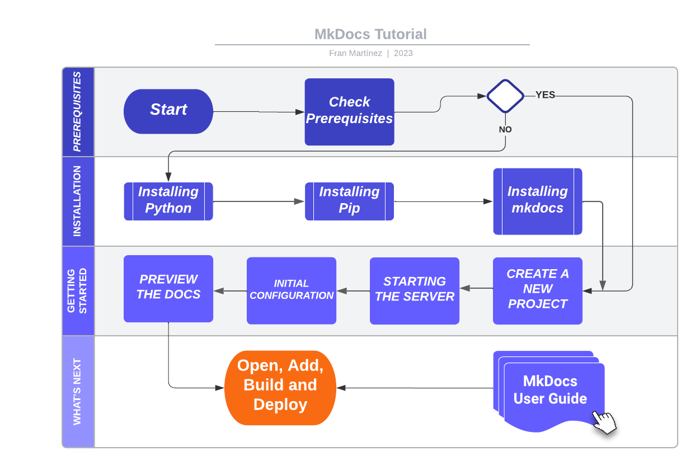

WELCOME TO MkDocs¶
MkDocs is a a fast, simple, and gorgeous static site generator for building project documentation, that provides several new features and improvements.
-
New features include responsive design, customizable color schemes, and enhanced documentation.
-
Documentation source files are written in Markdown, and configured with a single YAML configuration file.
-
MkDocs is highly customizable, allowing you to develop your documentation website according to your needs.
For original and full documentation visit mkdocs.org.
INTRODUCTION¶
This guide will help you install and preview MkDocs on your local environment and start building your own customized documentation website.

PREREQUISITES¶
To install MkDocs, you will need to have installed or available on your system the following:
- A terminal or console
- Python 3.x
- Pip 20.x
Check if you already have these installed from the command line:
$ python --version
Python 3.8.2
$ pip --version
pip 20.0.2 from /usr/local/lib/python3.8/site-packages/pip (python 3.8)
Installing Python¶
Python is a popular programming language required to run MkDocs. Here is a brief procedure to install Python on your system:
- Go to the official Python website at python.org.
- Select the appropriate operating system for your machine. For example, if you are running Windows, choose the Windows installer.
- Click on the "Download Python" button of the latest version of Python available.
- Once the download is complete, run the installer and follow the instructions to install Python on your system.
- During the installation process, make sure to select the option to add Python to your system PATH. This will allow you to run Python commands from your terminal or console.
Once the installation is complete, open a terminal or console and type the following command to verify the installation of Python:
$ python --version
Python 3.8.2
Installing Pip¶
Pip is a package installer for Python, that lets you install third-party libraries and modules. If you are using a recent version of Python, pip is likely to be pre-installed by default.
To upgrade pip to the lasted version:
pip install --upgrade pip
To verify the upgraded version of Pip, type the following command: :
pip --version
This command should display the version of Pip installed.
INSTALLATION¶
To install MkDocs, type the following command in your terminal:
pip install mkdocs
You should now have the mkdocs command and all its dependencies installed on your local system. To verify the installation, type the following command:
$ mkdocs --version
mkdocs, version 1.2.0 from /usr/local/lib/python3.8/site-packages/mkdocs (Python 3.8)
This command should display the version of MkDocs installed in your system.
GETTING STARTED¶
Getting started with MkDocs on your local environment is easy, follow these steps to preview your documentation:
Create a New Project¶
To create a new project, open a terminal or console and type the following command:
mkdocs new my-project
cd my-project
Review the initial project layout created for you.
mkdocs.yml # The configuration file.
docs/ # The folder that contains your documentation
index.md # The documentation homepage.
Starting the Server¶
To preview your documentation as you work on it, MkDocs comes with a built-in dev-server.
Make sure you are in the same directory as the mkdocs.yml configuration file, and then start the server by running the mkdocs serve command:
$ mkdocs serve
INFO - Building documentation...
INFO - Cleaning site directory
[I 160402 15:50:43 server:271] Serving on http://127.0.0.1:8000
[I 160402 15:50:43 handlers:58] Start watching changes
[I 160402 15:50:43 handlers:60] Start detecting changes
To see the default MkDocs home page, open up http://127.0.0.1:8000/ in your browser.

The dev-server also supports auto-reloading, which rebuilds your documentation whenever anything in the configuration file, documentation directory, or theme directory changes.
Initial Configuration¶
MkDocs have a single YAML configuration file called mkdocs.yml. The site_name and site_url are the only two required configuration options in your configuration file.
For initial editing, open up and change the site_name setting, for example, to MkDocs and save the file.
site_name: MkDocssite_url: https://example.com/
Your browser should immediately reload, and you'll see your new documentation site name displayed.

Note: When you create a new project, the
site_urloption value is:https://example.com. If you already known the final location of your website, it is recommended to update thesite_urloption to point to it. Please, be sure that you edit this option before deploying your site to a production server.
Preview the Docs¶
Documentation source files are written in Markdown, as an example, follow these steps to edit your documentation:
- Open the
docs/index.mddocument in your text editor of choice. - Change the initial heading to
# WELCOME TO MkDocs. - Save your changes.
Your browser will auto-reload, and you should see your updated documentation immediately.
WHAT'S NEXT?¶
Once you have installed and run MkDocs, you are ready to start editing, preview, and deploy your documentation.
Now you can simply navigate to your project directory to:
- Open your Markdown files and make any necessary changes
- Add more pages
- Build and preview your changes
- Deploy your documentation website to a production server.
From this point, for more complete documentation of all features, see the MkDocs User Guide.
Creating beautiful and professional-looking documentation has never been easier!
HELP COMMANDS¶
mkdocs new [dir-name]- Create a new project.mkdocs serve- Start the live-reloading docs server.mkdocs build- Build the documentation site.mkdocs -h- Print help message and exit.